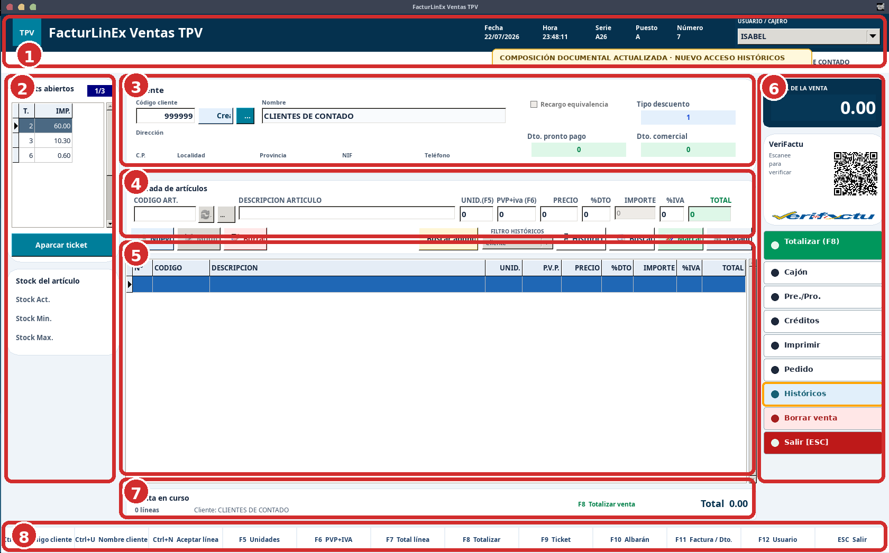
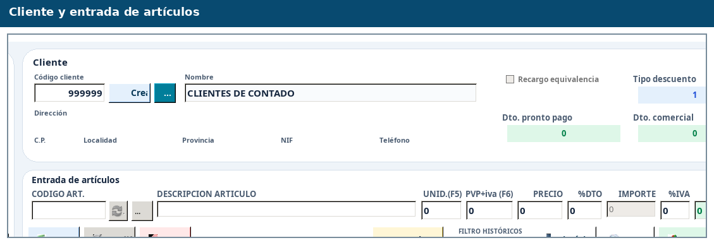
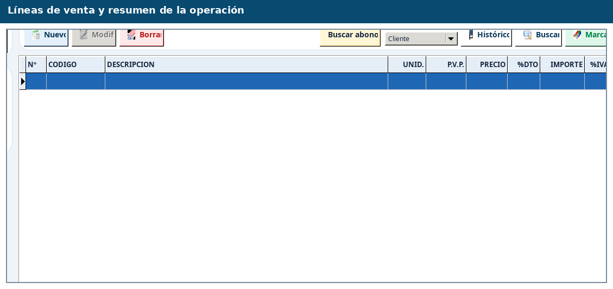
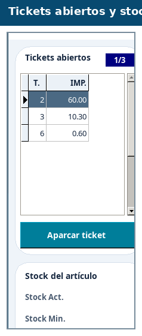
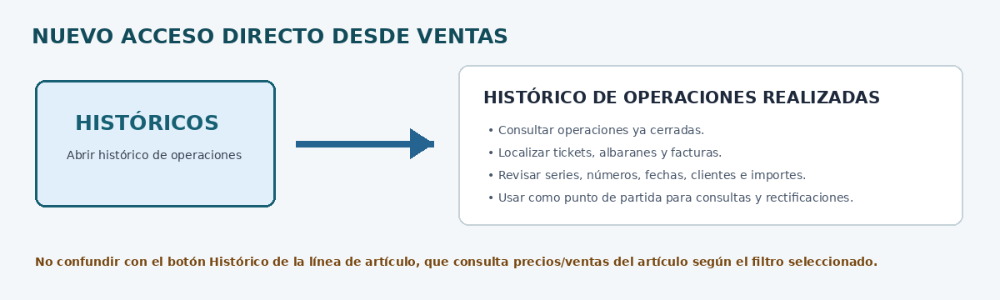
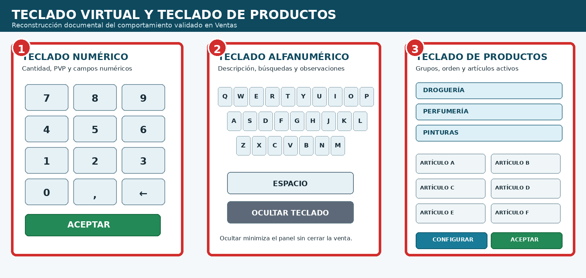
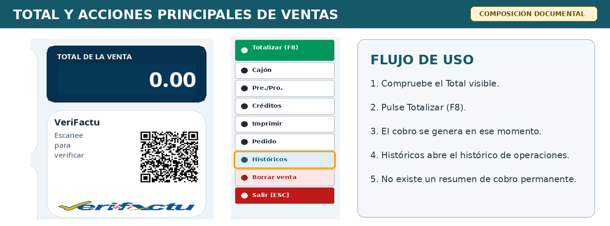
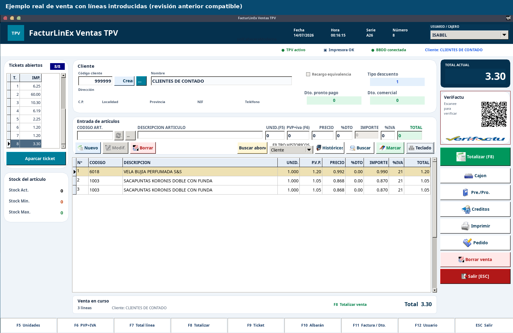
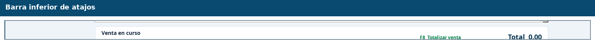

Ventas y TPV
Primera edición 1.0 FINAL · Manual completo y auditado
5.1 Objetivo y visión general #
Ventas es el centro de trabajo del TPV. Desde esta pantalla se identifica al cliente, se añaden artículos, se revisan cantidades, precios, descuentos e IVA, se aparcan operaciones, se totaliza y se decide el documento de salida.

5.2 Preparación antes de vender #
- Fecha y hora correctas.
- Serie adecuada al documento.
- Puesto y usuario correctos.
- TPV activo, impresora OK y BBDD conectada.
- Cliente de contado válido o sustituido por el cliente real.
5.3 Selección e identificación del cliente #

En ventas anónimas puede mantenerse el cliente de contado. Para facturas, albaranes, créditos, rectificativas o condiciones especiales debe seleccionarse la ficha correcta.
| Acción | Método | Resultado |
|---|---|---|
| Código cliente | Ctrl+O | Lleva el foco al código. |
| Nombre o búsqueda | Ctrl+U | Permite localizar por nombre o criterio disponible. |
| Aceptar línea / Nuevo | Ctrl+N | Ejecuta la función validada de la pantalla principal. |
| NIF | Búsqueda de clientes | Si hay varias coincidencias, debe abrirse un selector. |
5.4 Introducción de artículos y control de líneas #
- Sitúe el foco en CÓDIGO ART. o lea el EAN.
- Compruebe la descripción.
- Revise unidades, PVP con IVA, precio sin IVA, descuento, importe, IVA y total.
- Pulse Nuevo o el atajo correspondiente.
- Repita hasta completar la operación.

| Columna | Interpretación |
|---|---|
| UNID. | Cantidad vendida. |
| P.V.P. | Precio con IVA mostrado. |
| PRECIO | Precio sin IVA o base del circuito. |
| %DTO | Descuento aplicado. |
| IMPORTE | Importe neto o base de línea. |
| %IVA | Tipo de IVA. |
| TOTAL | Total final de la línea con IVA. |
5.5 Tickets abiertos, aparcado y stock #

- Aparque una venta para atender otra operación sin perder sus líneas.
- Antes de recuperarla, compruebe cliente, total, puesto y estado.
- No cree una venta nueva si la operación ya está aparcada.
- El stock mostrado es una ayuda; no sustituye el inventario cuando las existencias no son fiables.
F1 abre la primera venta aparcada, F2 la segunda, F3 la tercera y F4 la cuarta. Después de conmutar, revise cliente, líneas y total antes de continuar.
5.6 Búsquedas, históricos y marcado #
Ventas dispone de dos accesos históricos con finalidades diferentes. Histórico + filtro consulta antecedentes del artículo o cliente; el nuevo botón Históricos abre directamente el Histórico de operaciones realizadas.
| Acceso | Uso |
|---|---|
| Buscar | Localizar artículos por descripción cuando no se conoce código o EAN. |
| Histórico + filtro | Consultar ventas o precios anteriores del artículo o cliente según el filtro. |
| Históricos | Abrir el Histórico de operaciones realizadas para localizar documentos y operaciones cerradas. |
| Buscar abono | Localizar documento o línea de origen. |
| Marcar | Aplicar la función de marcado configurada. |

5.7 Códigos varios, teclado virtual y teclado de productos #
El flujo validado de códigos varios es Descripción → Cantidad → PVP, compatible con ENTER y TAB. Cantidad y precio activan teclado numérico; descripción y búsquedas, alfanumérico. El teclado de productos organiza botones por grupos y orden configurado.

| N.º | Zona | Comportamiento principal |
|---|---|---|
| 1 | Teclado numérico | Se activa en cantidades, precios y demás campos numéricos. |
| 2 | Teclado alfanumérico | Se utiliza en descripciones, búsquedas y observaciones; Ocultar minimiza el panel. |
| 3 | Teclado de productos | Organiza artículos por grupos y permite configurar qué productos aparecen y en qué orden. |
5.8 Totalización y cobro #
En la pantalla principal basta comprobar el Total de la venta. Al pulsar el botón verde Totalizar o F8, FacturLinEx genera el proceso de cobro correspondiente. La zona inferior no debe interpretarse como un resumen de cobro independiente y permanente.

- Compruebe el Total visible.
- Pulse F8 o Totalizar para iniciar el cobro.
- Confirme la forma de pago en el panel generado.
- Introduzca la entrega y revise el cambio cuando corresponda.
- Confirme el documento o salida.
- Espere la confirmación final antes de iniciar otra venta.
5.9 Documentos de salida #
| Documento | Uso | Comprobaciones |
|---|---|---|
| Ticket / simplificada | Venta inmediata de mostrador. | Serie simplificada, total y forma de pago. |
| Albarán | Entrega pendiente de facturación. | Cliente, serie, número y posterior facturación. |
| Factura completa | Documento fiscal con destinatario. | Razón social, NIF, dirección, IVA y total. |
| Rectificativa | Corrección de documento anterior. | Origen, serie, número, cliente y motivo. |
5.10 Ejemplo de una venta con líneas #

El ejemplo permite identificar cliente, artículos, unidades, PVP, precio, descuento, importe, IVA y total. Aunque procede de una revisión anterior, el flujo funcional es compatible.
5.11 Devoluciones, anulaciones y rectificativas #
- Las líneas negativas pueden activar el circuito rectificativo.
- Debe conservarse el origen, serie, número y motivo.
- Las ventas mixtas pueden requerir separación documental.
- Después de emitir, revise impresión, histórico, tablas rectificativas y cola VeriFactu.
5.12 Atajos de teclado confirmados #

5.13 Flujo recomendado de una venta normal #
- Compruebe fecha, serie, puesto, usuario, impresora y conexión.
- Seleccione el cliente cuando no sea contado genérico.
- Introduzca artículos y confirme descripción, cantidad, precio, descuento e IVA.
- Revise las líneas antes de cobrar.
- Compruebe el total y pulse F8.
- Seleccione forma de pago, Entrega y Cambio.
- Emita ticket, albarán o factura.
- Espere la confirmación y compruebe impresión, PDF, correo o VeriFactu.
5.14 Problemas habituales #
| Síntoma | Comprobación | Actuación segura |
|---|---|---|
| No encuentra cliente | Código, nombre, NIF y filtros. | Abra la búsqueda y seleccione la coincidencia correcta. |
| No aparece artículo | Código/EAN, tienda y ficha. | Busque por descripción; evite código vario innecesario. |
| Precio inesperado | Tarifa, cliente, descuento, IVA y coste. | Detenga la venta antes de totalizar. |
| Atajo Ctrl no actúa | Foco y paneles auxiliares. | Cierre el auxiliar y pruebe en la pantalla principal. |
| Aviso de correo oculto | Estado y posible superposición. | No reenvíe hasta confirmar si ya salió. |
| Pide serie/número incorrectos | Documento de origen. | Use el circuito adecuado de albarán, ticket o factura. |
5.15 Lista final de comprobación #
- Cliente y datos fiscales correctos.
- Artículos, cantidades, precios y descuentos correctos.
- IVA e importes coherentes.
- Forma de pago, entrega y cambio correctos.
- Serie, puesto, usuario y documento adecuados.
- Impresión/PDF legible y correo confirmado.
- Histórico, créditos y cola VeriFactu revisados cuando proceda.